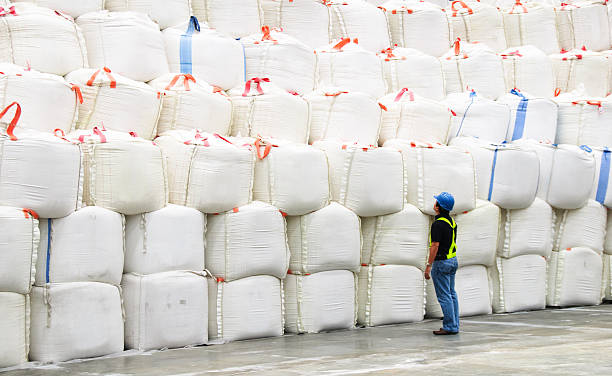

Target Audience
The audience are sugar entrepreneurs, professionals specialized in innovation, chemical processes, among others, as well as urban planning professionals who wish to promote the joint growth of the company and society.
Personas

Sugar Entrepreneur
Entrepreneur who is looking to innovate, associate with other companies and who seeks the common well-being of company - society. Two think better than one and many better than two.
Urban planning professional
Professional urban planner who has the vision of collaborating with companies in the growth of society and the environment.
Scenarios
- The evolution of science and technology allow us to innovate processes. Joining this chamber of commerce ensures you learn the best in processes.
- Our watchword is ethics, and part of ethics is seeking the common good. The sustained growth of a company allows it to collaborate with society.
- Meeting new entrepreneurs opens the possibility of creating new companies. Joining us is the means to achieve these options.
- Private enterprise can be a means of obtaining resources to grow society and protect the environment. In this space there are companies with the intention of collaborating with those who seek to grow their area.
- Often there are people who have a plan for social growth, but do not have the necessary resources. This chamber of commerce can provide you with knowledge and resources.